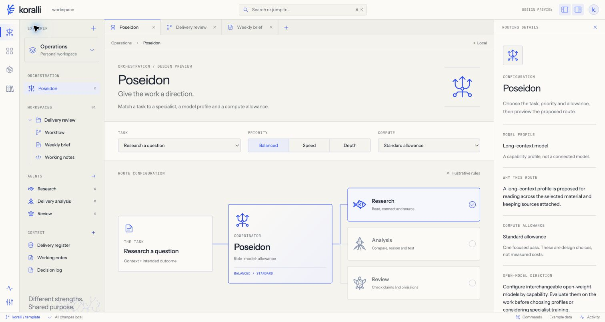

YFALOS / BY KORALLI
IN DEVELOPMENTAI for critical business processes.
Yfalos brings specialist agents, model routing and human review into one workspace.
We’re building it for processes where errors cost time, money and trust. Poseidon coordinates the work, with the aim of making agent systems more reliable and efficient.
Interactive workspace and worked examples.
No model execution in the public demo.
A clear route through the work.
Give each agent a clear job. Choose a suitable model for each task, and keep the evidence available for people to check.
Assign the work
Start with a question, the relevant sources and clear limits. Poseidon would bring in specialists with distinct responsibilities.
Choose the model
Choose a model for the task, using evidence of how well it performs and the time and budget available.
Check the result
Trace findings to evidence, make gaps visible and ask for human review. When the evidence is insufficient, return to the question.
gather more
evidence
Illustrative workflow · proposed architecture
THE WORKSPACE
See what sits behind a result.

WHAT WE ARE TESTING
Reliability has to be measured.
We want to make missing evidence easier to spot and straightforward tasks less costly to run. To test that, we will compare missed issues, unsupported claims, review time and cost against a single model doing the same work.
The prototype shows the intended workflow. Model routing and learning from outcomes remain to be built and evaluated.
DISCUSS A PROCESS WITH US ↗